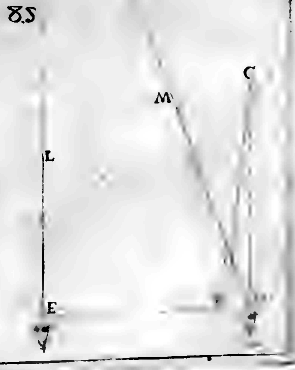
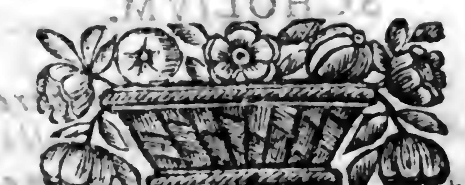

Propositio XXI · Theorema XVIII, Scholium & Finis Constructionis Staticae¶




PROP. XXI. THEOR. XVIII. (tab. 8. fig. 67, p. 59) In eadem figura ratio :g:`DI` ad :g:`IK` ex ijsdem rationibus localibus componitur, cum Corollario.
SCHOLIVM — Nouum instrumentum pro distantiis metiendis (tab. 10. fig. 85, pp. 59–60): Ponatur oculus in :g:`D`, & moueatur regula :g:`DM` circa centrum :g:`D`, donec intueamur per pinnacidia :g:`DM` idem punctum :g:`K` per lineam visualem :g:`DK`, quibus obseruatis notetur diligenter punctum :g:`I`, sectio videlicet linearum :g:`BC`, :g:`DM`. Ex 20. et 21. propositione statim habentur distantiae EK et DK.
EPILOGVS & FINIS CONSTRVCTIONIS STATICÆ (p. 60): Hæc à me paucis perstricta, quam latè pateant, vides, benigne lector… In elemento secundo, iunctis DB, BK, KD, ex 51 rationibus, datis duabus quibuslibet inueniet alias 49.
PRÆFATIO APPENDICIS (p. 60): Visum est appendicis loco adijcere his problematibus theoremata quædam, partim antiquis geometriæ legibus, partim Caualleriana methodo à me soluta, quamuis ex superius dictis minimè pendeant. Cum enim in circulo inutiliter quadrando, hæc omnia non inutiliter sint inuenta, par erat, vt in eodem volumine luce publica fruerentur.
f. 0077 · p. p. 60